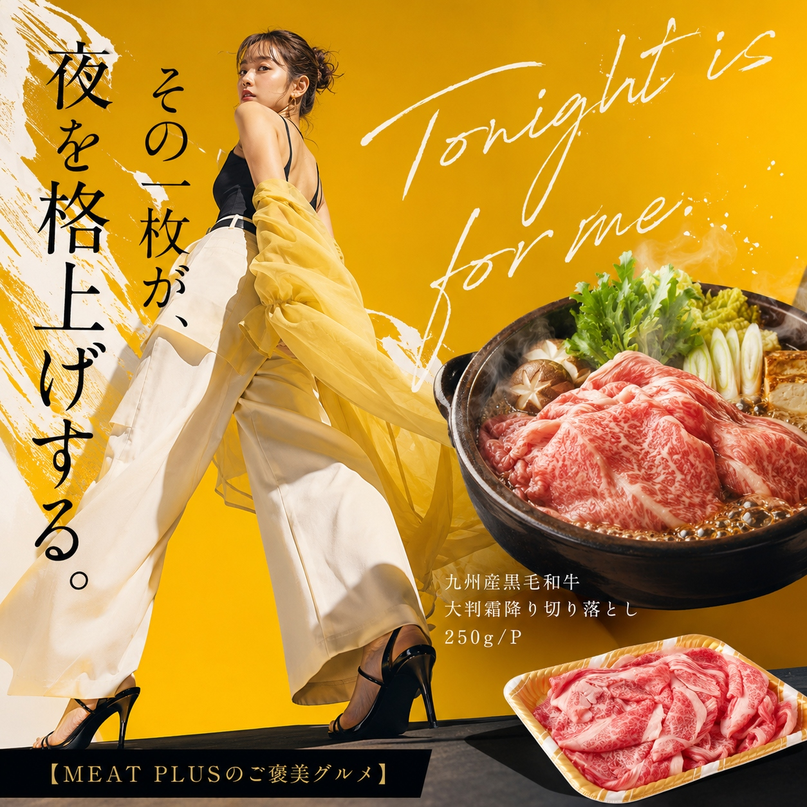
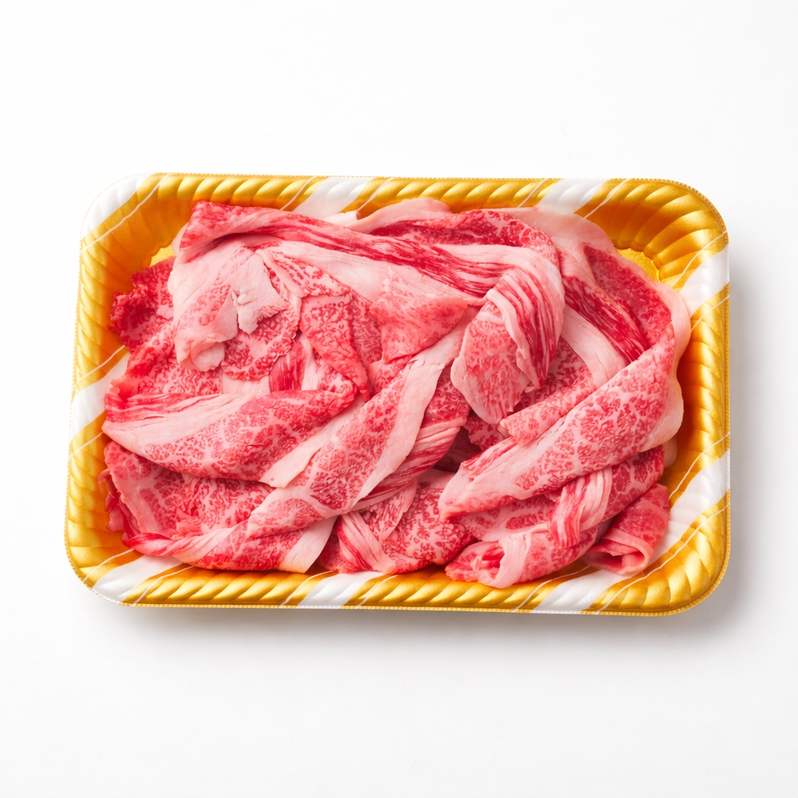
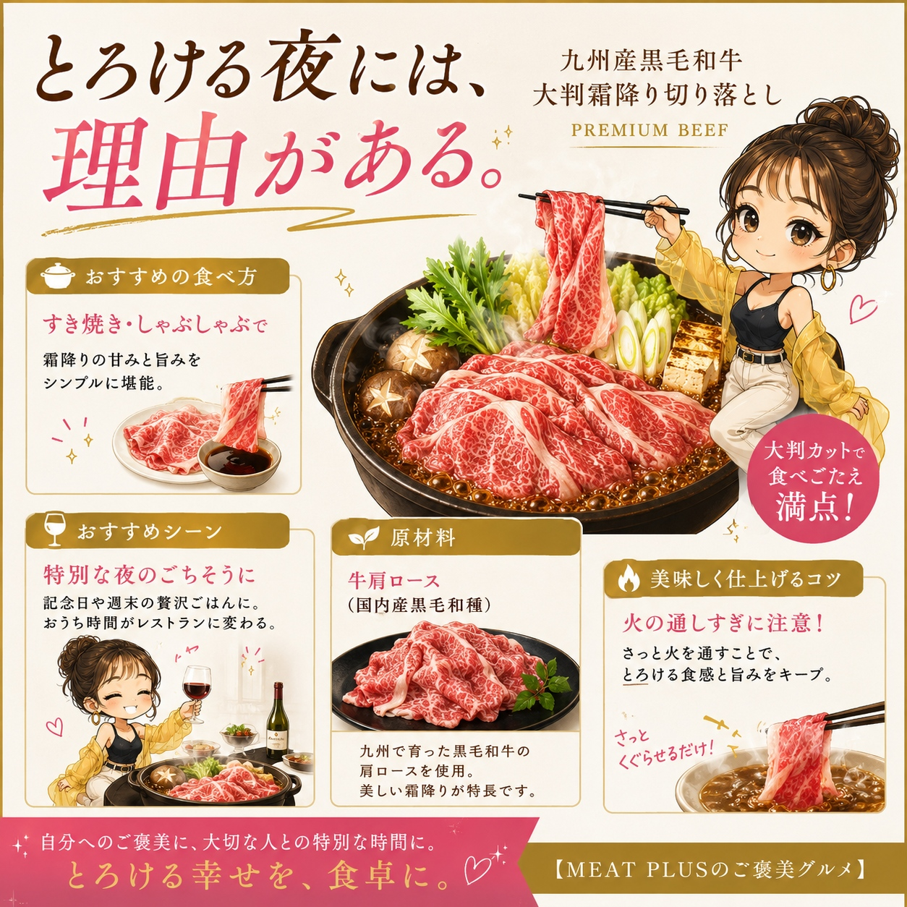
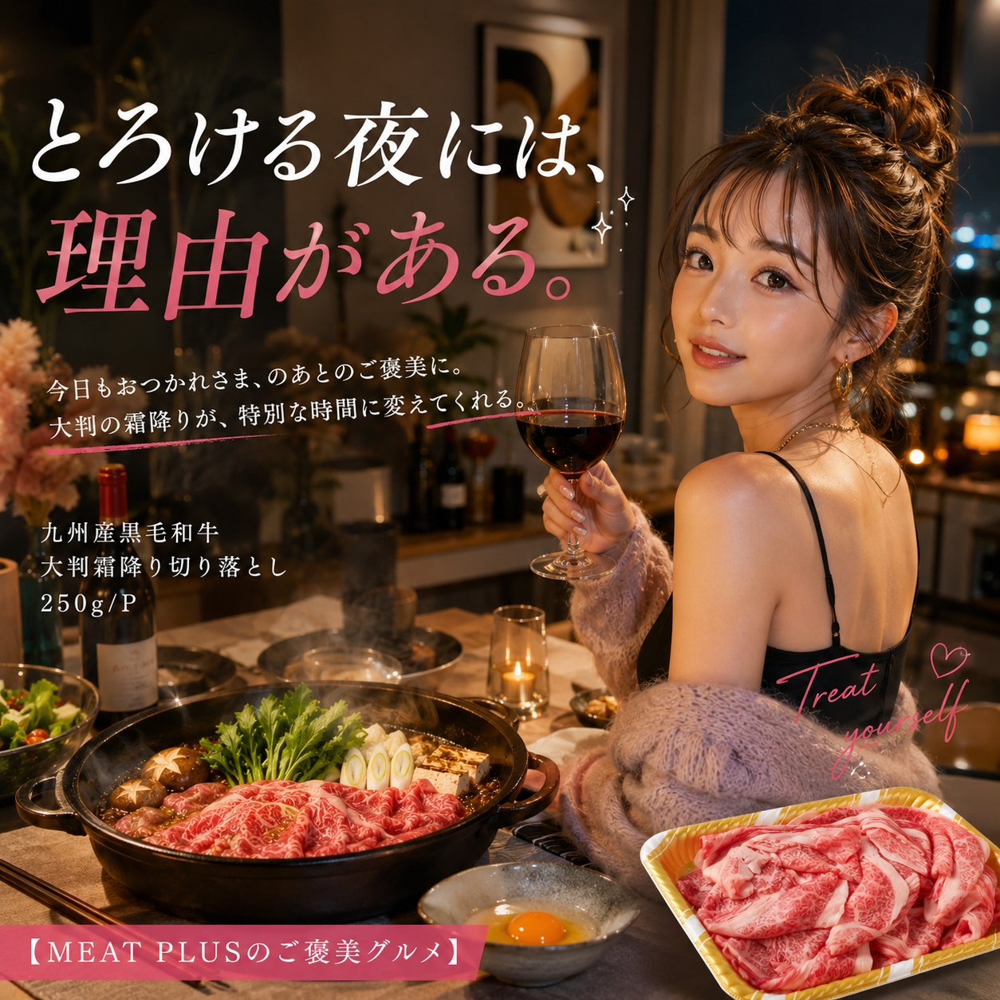

SCENE 01

a 牛肉
【「え、これが切り落とし？」食卓が沸く、大判霜降りの贅沢。】
今夜はちょっと贅沢に、とろけるようなお肉ですき焼きはいかがですか。そんな特別な日の食卓にふさわしいのが、この「九州産黒毛和牛 大判霜降り切り落とし」です。「切り落とし」という言葉から想像するお肉とは、きっと全く違うはず。お皿に広げれば、その一枚一枚の大きさに思わず驚きの声が上がるでしょう。九州の豊かな自然に育まれたA4～A5等級の黒毛和牛。その中でも特に旨味が濃厚な肩ロースの塊を、形を整えずそのままスライスしました。だからこそ実現できた、この大判サイズと贅沢な味わい。サッと火を通せば、上質な脂がじゅわっと溶け出し、お口の中いっぱいに甘みと旨みが広がります。すき焼きやしゃぶしゃぶはもちろん、さっと焼いて焼きしゃぶに、少し贅沢な牛丼にと、使い方も色々。いつもの食卓が、この一枚で特別なごちそうに変わります。家族の笑顔が目に浮かぶような、贅沢な味わいをぜひご家庭でお楽しみください。
公式サイトへ移動します。価格・在庫・配送条件は移動先で最終確認してください。



PRODUCT INFORMATION
牛肩ロース（国内産黒毛和種）
FAQ
A4～A5等級の大きな肩ロースの塊肉を、あえて形を整えずにそのままスライスしているためです。これにより、一枚一枚が大きく不揃いな、味わい深い切り落としが生まれます。
お召し上がりになる前日に冷蔵庫へ移し、一晩かけてゆっくりと解凍していただくのが最もおすすめです。お肉の旨味や風味を損なうことなく、美味しくお召し上がりいただけます。
MEAT PLUS OFFICIAL SHOP
仕入れ・加工・梱包・発送まで自社で行うMEAT PLUSの公式オンラインショップでご注文いただけます。
公式オンラインショップで購入する